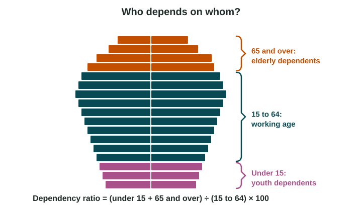

Around the world, people are living longer and having fewer children. Together, these two changes make populations older. This topic looks at why, how to measure it and what it means for a country.
Why populations age
An aging population is one in which older people make up a rising share. Two forces cause it:
- Low birth rates. Fewer babies means each new cohort is smaller, so the base of the pyramid narrows.
- Longer lives. As life expectancy rises, more people reach old age, so the top of the pyramid widens.
Migration can speed aging in one place. When young adults leave rural areas for city jobs, the villages they leave grow older, while the cities stay younger.
Japan is the classic case: more than a quarter of its people were 65 or older in 2023 (Statistics Bureau of Japan, 2023). Italy is close behind, with nearly a quarter aged 65 and over (Istat, 2024).
The dependency ratio

The dependency ratio compares people who are too young or too old to work with people of working age:
Dependency ratio = (people under 15 + people 65 and over) ÷ people aged 15 to 64 × 100
Worked example. An invented country has 6 million children under 15, 30 million people aged 15 to 64 and 12 million people 65 and over.
- Total dependency ratio: (6 + 12) ÷ 30 × 100 = 60 dependents per 100 people of working age.
- Youth dependency ratio: 6 ÷ 30 × 100 = 20.
- Elderly dependency ratio: 12 ÷ 30 × 100 = 40.
Divide by the working-age group, not the whole population.
The total can mislead. A young country with many children and an old country with many retirees can have the same total ratio and opposite needs. Always split it.
Effects of aging
| Kind | Effect | Real example |
|---|---|---|
| Economic | Too few workers; more spending on pensions and health care | Japan: robots in factories and care homes; a new visa for skilled foreign workers (2019) |
| Political | Debates over retirement age, taxes and benefits; older voters a growing share | France passed a law in 2023, after mass protests, to raise the minimum pension age from 62 to 64 in steps; in late 2025 parliament paused the rise |
| Social | More care work in families; schools close; more older people living alone | Rural Japan and Italy: villages with few children and many older residents |
Aging is not only a problem. Older people volunteer, care for grandchildren, spend savings and keep working longer in many countries. Businesses that serve older customers grow. Accuracy matters here: give both costs and benefits.
Responses
Countries respond in several ways, often together: pronatalist policies to raise births (Topic 2.7), immigration policies to bring in workers, raising the retirement age, and paying for care with new taxes. Each has costs, and each is debated.
Read the scale
National figures hide local ones. Within a country, rural provinces that young people leave can be far older than the capital. A map at the local scale shows where clinics, home care and transport for older people are most needed.